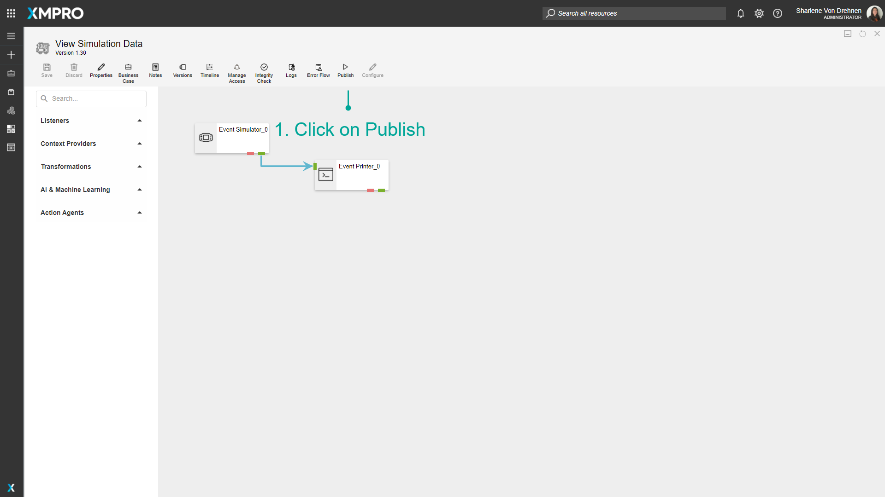
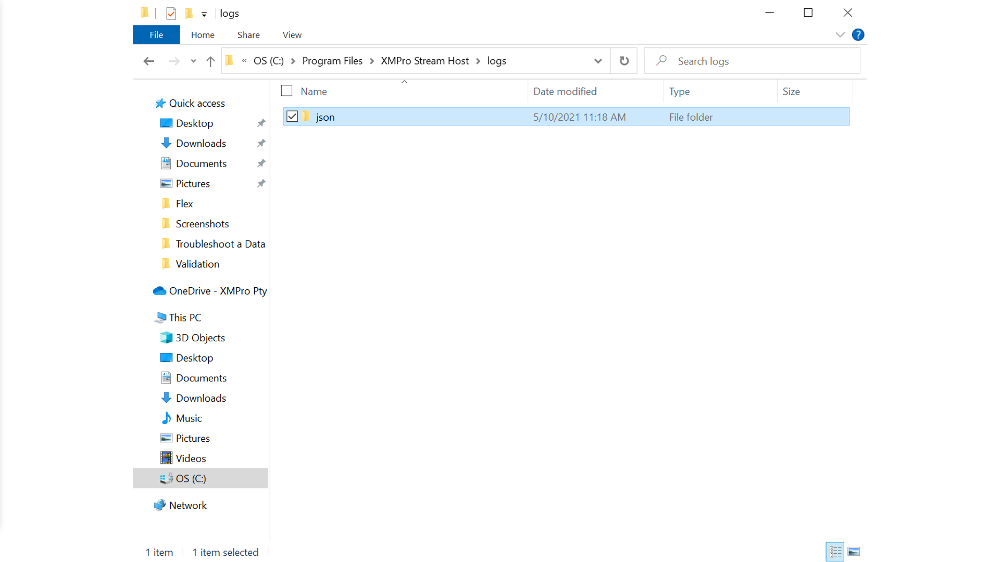

Troubleshoot a Data Stream
When creating and configuring a Data Stream, there is a chance it may not be working as expected, and you may have to find out more information as to why it is not behaving the way it should. There are a few options available on how to troubleshoot a Data Stream. Troubleshooting is required if you want to make sure the flow of data is accurate.
Note
It is recommended that you read the article listed below to improve your understanding of Data Streams.
Troubleshoot using Live View
To troubleshoot using the Live View, follow the steps below:
- Click on Publish.

- Click on Live View.
- Select the Agent/s to view the Live Data for.
- Click Save.
Note
If data is not being displayed when it should be, or if the values are not being displayed as expected, something may be going wrong with the Agent.

Troubleshooting using Error Endpoints
To Troubleshoot using the Error Endpoints, follow the steps below:
- Drag an Event Printer agent onto the canvas. They can be found under 'Action Agents.'
- Add an arrow from the error endpoint connected to the Event Printer.
- Click on Publish.

- Click on Live View.
- Select the Event Printer.
- Click Save.
Troubleshooting when there is no data visible
In some cases, the Event Printer does not show any data when trying to troubleshoot the Data Stream. If this is the case, the Collections Stream Host may be able to give some information.
- Open the Collections page from the left-hand menu.
- Click on the Collection.
- Click on Stream Hosts.
- Select the Stream Host.
- View the logs from the Stream Host.
Note
Any errors that are generated from an Agent which are printed from the error endpoint are also printed in the Stream Host logs.
Troubleshooting when there are no Stream Hosts
If the Stream Host is not running at all, you can view the logs from the install directory of the Stream Host on your computer. The install folder is named XMPro Stream Host and is usually found in the Program Files in the C Drive.

Last modified: August 19, 2025